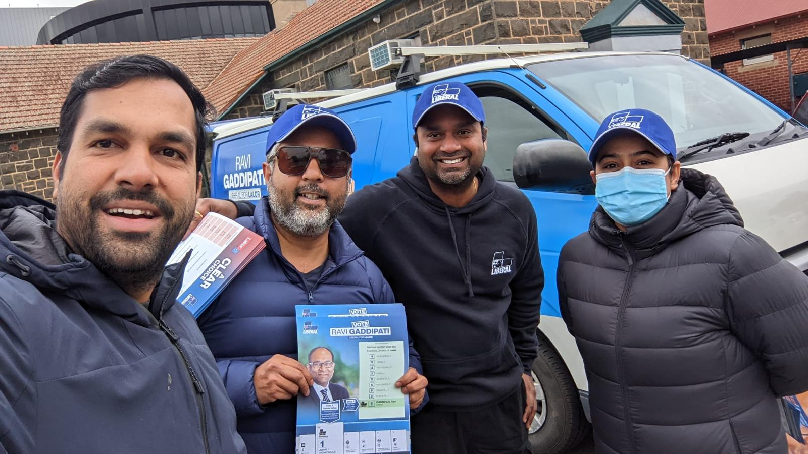

Dinesh Gourisetty
March 12, 2025 · 10 min readExploring the evolving landscape of political representation and the growing influence of diverse communities in shaping Australia's democratic processes.
In the diverse tapestry of Australian society, political representation has long been a reflection of its demographic evolution. As we progress further into the 21st century, the face of Australian politics is undergoing a significant transformation, with multicultural voices increasingly shaping the nation's democratic discourse.
The Changing Demographics of Political Engagement
Australia's population represents one of the most culturally diverse societies in the world. With nearly 30% of Australians born overseas and over 300 languages spoken across the country, this rich diversity has historically been underrepresented in the corridors of power. However, recent trends indicate a shifting landscape.
The last decade has witnessed a notable increase in political candidates from diverse backgrounds. From local councils to state parliaments and federal representation, multicultural Australians are stepping forward to serve their communities and bring fresh perspectives to policy-making.
This shift isn't merely symbolic; it represents a fundamental evolution in how our democracy functions. When political bodies reflect the communities they serve, policy outcomes tend to be more inclusive and responsive to diverse needs.
Challenges and Opportunities for Diverse Representation
Despite positive trends, significant challenges remain for multicultural Australians seeking political engagement. These challenges include:
Structural Barriers
Many political structures were established during times when Australia's population was less diverse. Party pre-selection processes, campaign funding models, and political networks can inadvertently create barriers for new entrants, particularly those from multicultural backgrounds.
Representation vs. Tokenism
As political organizations recognize the importance of diversity, there's a fine line between meaningful representation and tokenistic inclusion. Genuine representation requires that multicultural voices are not only present but empowered to influence policy direction and organizational decisions.
"The true measure of diversity in politics isn't just about who sits at the table, but whose voices are heard when decisions are made."
Community Connections
One significant advantage for multicultural political candidates is their deep connection to community networks. These connections often translate into grassroots support, volunteer engagement, and the ability to mobilize communities that have traditionally been politically disengaged.
My experience in the 2014 Victorian Electoral District of Tarneit demonstrated the power of community engagement. Securing 35.4% of votes wasn't just a statistical achievement but a reflection of how multicultural communities can unite behind candidates who understand their unique challenges and aspirations.

The Role of Community Organizations in Political Development
Community organizations serve as essential bridges between multicultural communities and political systems. Through my work with the Telugu Association of Australia and Australia Hindu Mahasabha Inc (AHMSI), I've witnessed firsthand how these organizations:
- Create platforms for political education and engagement
- Develop leadership pipelines that prepare community members for public service
- Advocate for community needs, increasing visibility with decision-makers
- Foster intercultural dialogue that builds broader coalitions
These organizations don't just preserve cultural heritage; they actively shape how communities engage with broader political processes.
Digital Engagement and Modern Political Participation
The digital revolution has democratized political communication, creating new opportunities for diverse voices to reach wider audiences. Social media platforms, in particular, have become powerful tools for multicultural candidates to:
- Build personal connections with constituents
- Circumvent traditional media gatekeepers
- Mobilize supporters through targeted messaging
- Create authentic narratives that resonate with diverse communities
However, digital engagement comes with its own challenges, including online harassment and the risk of communication silos. Effective multicultural representation requires bridging these digital divides.
Looking Forward: A More Representative Democracy
The future of multicultural representation in Australian politics isn't just about increasing diversity in traditional political structures; it's about reimagining how our democracy functions in an increasingly diverse society.
This reimagining includes:
Institutional Reform
Political parties and institutions must evaluate their internal structures to remove barriers to participation. This includes revising pre-selection processes, providing mentorship programs, and creating pathways for leadership development.
Civic Education
Enhancing civic education within multicultural communities can increase political literacy and engagement. When communities understand how political systems work, they're better equipped to participate effectively.
Coalition Building
The most effective political movements are those that build bridges across diverse communities. Rather than siloed advocacy, the future lies in creating broad coalitions that unite around shared values and interests.
"True progress comes not when we advocate only for our own communities but when we recognize that our diverse stories weave together to create a stronger, more resilient national narrative."
Conclusion: A Shared Journey
The path toward more inclusive political representation isn't the responsibility of multicultural communities alone; it requires commitment from all Australians who value a vibrant, representative democracy. By working together, we can create political systems that truly reflect Australia's remarkable diversity.
As we look to the future, I remain optimistic that the increasing participation of diverse voices in politics will strengthen our democratic institutions and lead to more nuanced, inclusive policy outcomes that benefit all Australians.
Comments (3)
This is an excellent analysis of the current political landscape. I particularly appreciated the section about community organizations as bridges for political engagement. As someone involved in local politics, I've witnessed firsthand how these organizations can mobilize communities that have traditionally been disengaged.
Thank you for highlighting the challenges as well as the opportunities. The point about "representation vs. tokenism" resonated with me deeply. Too often, diversity initiatives stop at visibility without addressing the deeper structural issues that prevent meaningful participation.
I'd be interested to hear more about your thoughts on digital engagement strategies for multicultural candidates. In my experience working on political campaigns, we've found that different communities engage with social media platforms in distinct ways, requiring tailored approaches rather than one-size-fits-all digital strategies.
Leave a Comment